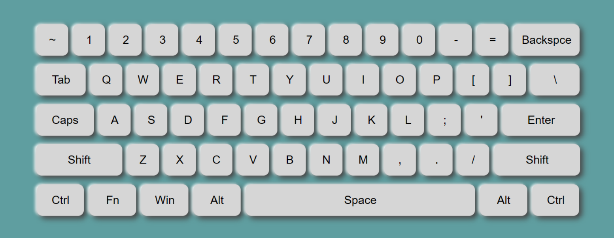

Virtual keyboard, or “on-screen” keyboard, , lets you type directly in your local language script in an easy and consistent manner, no matter where you are or what computer you’re using. Some common uses of virtual keyboards include:
Allowing a person to type in their own language on foreign keyboards - such as when traveling abroad or living in another country, Enabling a more accessible typing experience by allowing typing by on-screen clicks, Providing a fast, simple way to switch between different character sets and/or alphabets.
A virtual keyboard, also known as an on-screen keyboard or software keyboard, is a software-based interface that allows users to input text or commands using a mouse, touchpad, or touchscreen instead of a physical keyboard. It is primarily used on devices that have limited or no physical keyboard, such as smartphones, tablets, handheld gaming consoles, and some smart TVs.
Virtual keyboards can be accessed by tapping or clicking on a designated area on the screen. They typically appear as a graphical representation of a keyboard, displaying alphanumeric keys, function keys, and other special keys such as shift, control, and alt keys. The layout and appearance of the virtual keyboard can vary depending on the operating system and device.
The main purpose of virtual keyboards is to provide a convenient method of text input on devices that lack a physical keyboard. This is particularly useful for touch-based devices where the space is limited or there is no physical keyboard at all. Virtual keyboards may also offer features such as auto-correct, predictive text, and haptic feedback to enhance the typing experience.
Virtual keyboards can support different input methods, including tapping on the keys with a mouse or finger, sliding gestures across the keys, or using handwriting recognition. Some virtual keyboards also support multiple languages, allowing users to switch between different keyboard layouts and input methods.
While virtual keyboards offer convenience and flexibility, they also have certain limitations. They may not provide the same tactile feedback or typing speed as physical keyboards. Additionally, the screen space occupied by the virtual keyboard can reduce the visible content on the screen, especially on smaller devices.
Overall, virtual keyboards have become an essential component of touch-based devices, enabling users to input text efficiently without the need for a physical keyboard. They have greatly contributed to the advancement of mobile technology and touchscreen interfaces, making it easier for users to interact with their devices.